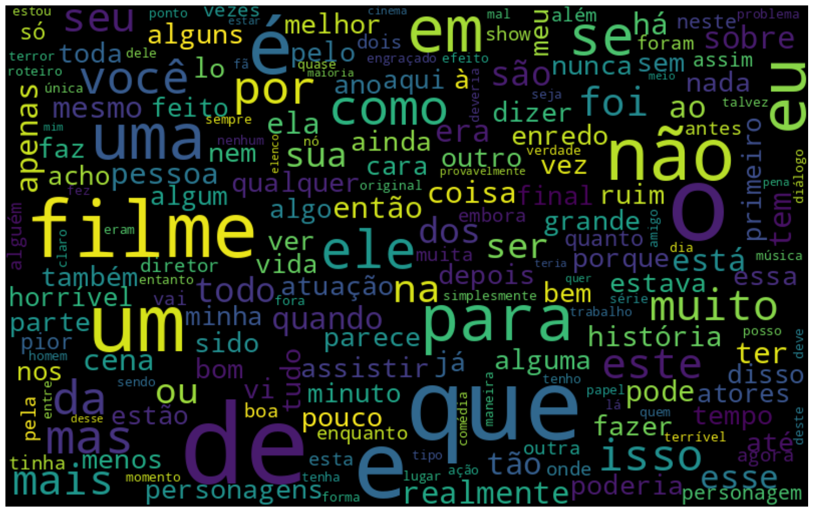
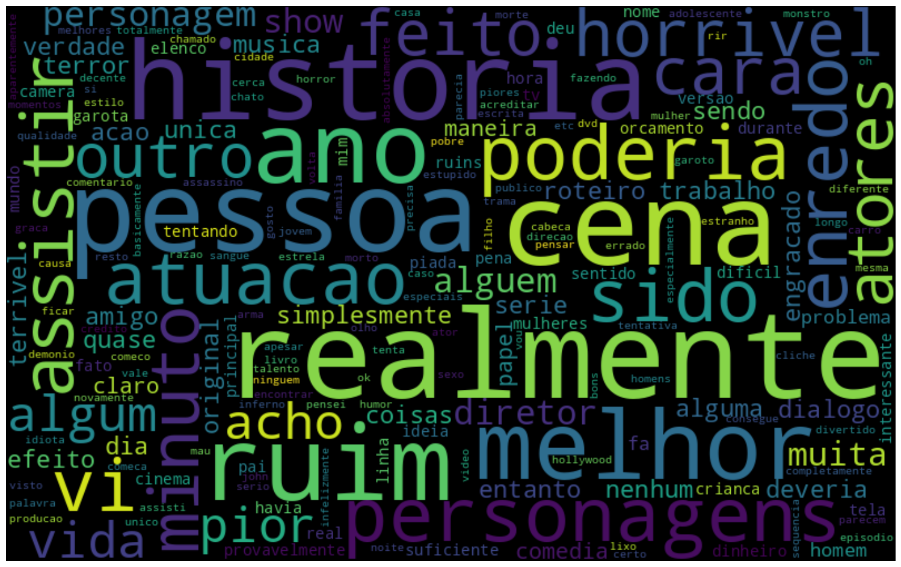

!pip install unidecode
Collecting unidecode
Downloading Unidecode-1.4.0-py3-none-any.whl.metadata (13 kB)
Downloading Unidecode-1.4.0-py3-none-any.whl (235 kB)
?25l ━━━━━━━━━━━━━━━━━━━━━━━━━━━━━━━━━━━━━━━━ 0.0/235.8 kB ? eta -:--:--
━━━━━━━━━━━━━━━━━━━━━━━━━━━━━━━━━━━━━━━━ 235.8/235.8 kB 11.7 MB/s eta 0:00:00
?25hInstalling collected packages: unidecode
Successfully installed unidecode-1.4.0
import re
import nltk
nltk.download('all')
import spacy
import pandas as pd
import matplotlib.pyplot as plt
from wordcloud import WordCloud
from unidecode import unidecode
from string import punctuation
from sklearn.feature_extraction.text import CountVectorizer, TfidfVectorizer
from nltk import word_tokenize
from nltk.corpus import stopwords
from spacy.lang.pt.stop_words import STOP_WORDS
%matplotlib inline
[nltk_data] Downloading collection 'all'
[nltk_data] |
[nltk_data] | Downloading package abc to /root/nltk_data...
[nltk_data] | Unzipping corpora/abc.zip.
[nltk_data] | Downloading package alpino to /root/nltk_data...
[nltk_data] | Unzipping corpora/alpino.zip.
[nltk_data] | Downloading package averaged_perceptron_tagger to
[nltk_data] | /root/nltk_data...
[nltk_data] | Unzipping taggers/averaged_perceptron_tagger.zip.
[nltk_data] | Downloading package averaged_perceptron_tagger_eng to
[nltk_data] | /root/nltk_data...
[nltk_data] | Unzipping
[nltk_data] | taggers/averaged_perceptron_tagger_eng.zip.
[nltk_data] | Downloading package averaged_perceptron_tagger_ru to
[nltk_data] | /root/nltk_data...
[nltk_data] | Unzipping
[nltk_data] | taggers/averaged_perceptron_tagger_ru.zip.
[nltk_data] | Downloading package averaged_perceptron_tagger_rus to
[nltk_data] | /root/nltk_data...
[nltk_data] | Unzipping
[nltk_data] | taggers/averaged_perceptron_tagger_rus.zip.
[nltk_data] | Downloading package basque_grammars to
[nltk_data] | /root/nltk_data...
[nltk_data] | Unzipping grammars/basque_grammars.zip.
[nltk_data] | Downloading package bcp47 to /root/nltk_data...
[nltk_data] | Downloading package biocreative_ppi to
[nltk_data] | /root/nltk_data...
[nltk_data] | Unzipping corpora/biocreative_ppi.zip.
[nltk_data] | Downloading package bllip_wsj_no_aux to
[nltk_data] | /root/nltk_data...
[nltk_data] | Unzipping models/bllip_wsj_no_aux.zip.
[nltk_data] | Downloading package book_grammars to
[nltk_data] | /root/nltk_data...
[nltk_data] | Unzipping grammars/book_grammars.zip.
[nltk_data] | Downloading package brown to /root/nltk_data...
[nltk_data] | Unzipping corpora/brown.zip.
[nltk_data] | Downloading package brown_tei to /root/nltk_data...
[nltk_data] | Unzipping corpora/brown_tei.zip.
[nltk_data] | Downloading package cess_cat to /root/nltk_data...
[nltk_data] | Unzipping corpora/cess_cat.zip.
[nltk_data] | Downloading package cess_esp to /root/nltk_data...
[nltk_data] | Unzipping corpora/cess_esp.zip.
[nltk_data] | Downloading package chat80 to /root/nltk_data...
[nltk_data] | Unzipping corpora/chat80.zip.
[nltk_data] | Downloading package city_database to
[nltk_data] | /root/nltk_data...
[nltk_data] | Unzipping corpora/city_database.zip.
[nltk_data] | Downloading package cmudict to /root/nltk_data...
[nltk_data] | Unzipping corpora/cmudict.zip.
[nltk_data] | Downloading package comparative_sentences to
[nltk_data] | /root/nltk_data...
[nltk_data] | Unzipping corpora/comparative_sentences.zip.
[nltk_data] | Downloading package comtrans to /root/nltk_data...
[nltk_data] | Downloading package conll2000 to /root/nltk_data...
[nltk_data] | Unzipping corpora/conll2000.zip.
[nltk_data] | Downloading package conll2002 to /root/nltk_data...
[nltk_data] | Unzipping corpora/conll2002.zip.
[nltk_data] | Downloading package conll2007 to /root/nltk_data...
[nltk_data] | Downloading package crubadan to /root/nltk_data...
[nltk_data] | Unzipping corpora/crubadan.zip.
[nltk_data] | Downloading package dependency_treebank to
[nltk_data] | /root/nltk_data...
[nltk_data] | Unzipping corpora/dependency_treebank.zip.
[nltk_data] | Downloading package dolch to /root/nltk_data...
[nltk_data] | Unzipping corpora/dolch.zip.
[nltk_data] | Downloading package english_wordnet to
[nltk_data] | /root/nltk_data...
[nltk_data] | Unzipping corpora/english_wordnet.zip.
[nltk_data] | Downloading package europarl_raw to
[nltk_data] | /root/nltk_data...
[nltk_data] | Unzipping corpora/europarl_raw.zip.
[nltk_data] | Downloading package extended_omw to
[nltk_data] | /root/nltk_data...
[nltk_data] | Downloading package floresta to /root/nltk_data...
[nltk_data] | Unzipping corpora/floresta.zip.
[nltk_data] | Downloading package framenet_v15 to
[nltk_data] | /root/nltk_data...
[nltk_data] | Unzipping corpora/framenet_v15.zip.
[nltk_data] | Downloading package framenet_v17 to
[nltk_data] | /root/nltk_data...
[nltk_data] | Unzipping corpora/framenet_v17.zip.
[nltk_data] | Downloading package gazetteers to /root/nltk_data...
[nltk_data] | Unzipping corpora/gazetteers.zip.
[nltk_data] | Downloading package genesis to /root/nltk_data...
[nltk_data] | Unzipping corpora/genesis.zip.
[nltk_data] | Downloading package gutenberg to /root/nltk_data...
[nltk_data] | Unzipping corpora/gutenberg.zip.
[nltk_data] | Downloading package ieer to /root/nltk_data...
[nltk_data] | Unzipping corpora/ieer.zip.
[nltk_data] | Downloading package inaugural to /root/nltk_data...
[nltk_data] | Unzipping corpora/inaugural.zip.
[nltk_data] | Downloading package indian to /root/nltk_data...
[nltk_data] | Unzipping corpora/indian.zip.
[nltk_data] | Downloading package jeita to /root/nltk_data...
[nltk_data] | Downloading package kimmo to /root/nltk_data...
[nltk_data] | Unzipping corpora/kimmo.zip.
[nltk_data] | Downloading package knbc to /root/nltk_data...
[nltk_data] | Downloading package large_grammars to
[nltk_data] | /root/nltk_data...
[nltk_data] | Unzipping grammars/large_grammars.zip.
[nltk_data] | Downloading package lin_thesaurus to
[nltk_data] | /root/nltk_data...
[nltk_data] | Unzipping corpora/lin_thesaurus.zip.
[nltk_data] | Downloading package mac_morpho to /root/nltk_data...
[nltk_data] | Unzipping corpora/mac_morpho.zip.
[nltk_data] | Downloading package machado to /root/nltk_data...
[nltk_data] | Downloading package masc_tagged to /root/nltk_data...
[nltk_data] | Downloading package maxent_ne_chunker to
[nltk_data] | /root/nltk_data...
[nltk_data] | Unzipping chunkers/maxent_ne_chunker.zip.
[nltk_data] | Downloading package maxent_ne_chunker_tab to
[nltk_data] | /root/nltk_data...
[nltk_data] | Unzipping chunkers/maxent_ne_chunker_tab.zip.
[nltk_data] | Downloading package maxent_treebank_pos_tagger to
[nltk_data] | /root/nltk_data...
[nltk_data] | Unzipping taggers/maxent_treebank_pos_tagger.zip.
[nltk_data] | Downloading package maxent_treebank_pos_tagger_tab to
[nltk_data] | /root/nltk_data...
[nltk_data] | Unzipping
[nltk_data] | taggers/maxent_treebank_pos_tagger_tab.zip.
[nltk_data] | Downloading package mock_corpus to /root/nltk_data...
[nltk_data] | Unzipping corpora/mock_corpus.zip.
[nltk_data] | Downloading package moses_sample to
[nltk_data] | /root/nltk_data...
[nltk_data] | Unzipping models/moses_sample.zip.
[nltk_data] | Downloading package movie_reviews to
[nltk_data] | /root/nltk_data...
[nltk_data] | Unzipping corpora/movie_reviews.zip.
[nltk_data] | Downloading package mte_teip5 to /root/nltk_data...
[nltk_data] | Unzipping corpora/mte_teip5.zip.
[nltk_data] | Downloading package mwa_ppdb to /root/nltk_data...
[nltk_data] | Unzipping misc/mwa_ppdb.zip.
[nltk_data] | Downloading package names to /root/nltk_data...
[nltk_data] | Unzipping corpora/names.zip.
[nltk_data] | Downloading package nombank.1.0 to /root/nltk_data...
[nltk_data] | Downloading package nonbreaking_prefixes to
[nltk_data] | /root/nltk_data...
[nltk_data] | Unzipping corpora/nonbreaking_prefixes.zip.
[nltk_data] | Downloading package nps_chat to /root/nltk_data...
[nltk_data] | Unzipping corpora/nps_chat.zip.
[nltk_data] | Downloading package omw to /root/nltk_data...
[nltk_data] | Downloading package omw-1.4 to /root/nltk_data...
[nltk_data] | Downloading package opinion_lexicon to
[nltk_data] | /root/nltk_data...
[nltk_data] | Unzipping corpora/opinion_lexicon.zip.
[nltk_data] | Downloading package panlex_swadesh to
[nltk_data] | /root/nltk_data...
[nltk_data] | Downloading package paradigms to /root/nltk_data...
[nltk_data] | Unzipping corpora/paradigms.zip.
[nltk_data] | Downloading package pe08 to /root/nltk_data...
[nltk_data] | Unzipping corpora/pe08.zip.
[nltk_data] | Downloading package perluniprops to
[nltk_data] | /root/nltk_data...
[nltk_data] | Unzipping misc/perluniprops.zip.
[nltk_data] | Downloading package pil to /root/nltk_data...
[nltk_data] | Unzipping corpora/pil.zip.
[nltk_data] | Downloading package pl196x to /root/nltk_data...
[nltk_data] | Unzipping corpora/pl196x.zip.
[nltk_data] | Downloading package porter_test to /root/nltk_data...
[nltk_data] | Unzipping stemmers/porter_test.zip.
[nltk_data] | Downloading package ppattach to /root/nltk_data...
[nltk_data] | Unzipping corpora/ppattach.zip.
[nltk_data] | Downloading package problem_reports to
[nltk_data] | /root/nltk_data...
[nltk_data] | Unzipping corpora/problem_reports.zip.
[nltk_data] | Downloading package product_reviews_1 to
[nltk_data] | /root/nltk_data...
[nltk_data] | Unzipping corpora/product_reviews_1.zip.
[nltk_data] | Downloading package product_reviews_2 to
[nltk_data] | /root/nltk_data...
[nltk_data] | Unzipping corpora/product_reviews_2.zip.
[nltk_data] | Downloading package propbank to /root/nltk_data...
[nltk_data] | Downloading package pros_cons to /root/nltk_data...
[nltk_data] | Unzipping corpora/pros_cons.zip.
[nltk_data] | Downloading package ptb to /root/nltk_data...
[nltk_data] | Unzipping corpora/ptb.zip.
[nltk_data] | Downloading package punkt to /root/nltk_data...
[nltk_data] | Unzipping tokenizers/punkt.zip.
[nltk_data] | Downloading package punkt_tab to /root/nltk_data...
[nltk_data] | Unzipping tokenizers/punkt_tab.zip.
[nltk_data] | Downloading package qc to /root/nltk_data...
[nltk_data] | Unzipping corpora/qc.zip.
[nltk_data] | Downloading package reuters to /root/nltk_data...
[nltk_data] | Downloading package rslp to /root/nltk_data...
[nltk_data] | Unzipping stemmers/rslp.zip.
[nltk_data] | Downloading package rte to /root/nltk_data...
[nltk_data] | Unzipping corpora/rte.zip.
[nltk_data] | Downloading package sample_grammars to
[nltk_data] | /root/nltk_data...
[nltk_data] | Unzipping grammars/sample_grammars.zip.
[nltk_data] | Downloading package semcor to /root/nltk_data...
[nltk_data] | Downloading package senseval to /root/nltk_data...
[nltk_data] | Unzipping corpora/senseval.zip.
[nltk_data] | Downloading package sentence_polarity to
[nltk_data] | /root/nltk_data...
[nltk_data] | Unzipping corpora/sentence_polarity.zip.
[nltk_data] | Downloading package sentiwordnet to
[nltk_data] | /root/nltk_data...
[nltk_data] | Unzipping corpora/sentiwordnet.zip.
[nltk_data] | Downloading package shakespeare to /root/nltk_data...
[nltk_data] | Unzipping corpora/shakespeare.zip.
[nltk_data] | Downloading package sinica_treebank to
[nltk_data] | /root/nltk_data...
[nltk_data] | Unzipping corpora/sinica_treebank.zip.
[nltk_data] | Downloading package smultron to /root/nltk_data...
[nltk_data] | Unzipping corpora/smultron.zip.
[nltk_data] | Downloading package snowball_data to
[nltk_data] | /root/nltk_data...
[nltk_data] | Downloading package spanish_grammars to
[nltk_data] | /root/nltk_data...
[nltk_data] | Unzipping grammars/spanish_grammars.zip.
[nltk_data] | Downloading package state_union to /root/nltk_data...
[nltk_data] | Unzipping corpora/state_union.zip.
[nltk_data] | Downloading package stopwords to /root/nltk_data...
[nltk_data] | Unzipping corpora/stopwords.zip.
[nltk_data] | Downloading package subjectivity to
[nltk_data] | /root/nltk_data...
[nltk_data] | Unzipping corpora/subjectivity.zip.
[nltk_data] | Downloading package swadesh to /root/nltk_data...
[nltk_data] | Unzipping corpora/swadesh.zip.
[nltk_data] | Downloading package switchboard to /root/nltk_data...
[nltk_data] | Unzipping corpora/switchboard.zip.
[nltk_data] | Downloading package tagsets to /root/nltk_data...
[nltk_data] | Unzipping help/tagsets.zip.
[nltk_data] | Downloading package tagsets_json to
[nltk_data] | /root/nltk_data...
[nltk_data] | Unzipping help/tagsets_json.zip.
[nltk_data] | Downloading package timit to /root/nltk_data...
[nltk_data] | Unzipping corpora/timit.zip.
[nltk_data] | Downloading package toolbox to /root/nltk_data...
[nltk_data] | Unzipping corpora/toolbox.zip.
[nltk_data] | Downloading package treebank to /root/nltk_data...
[nltk_data] | Unzipping corpora/treebank.zip.
[nltk_data] | Downloading package twitter_samples to
[nltk_data] | /root/nltk_data...
[nltk_data] | Unzipping corpora/twitter_samples.zip.
[nltk_data] | Downloading package udhr to /root/nltk_data...
[nltk_data] | Unzipping corpora/udhr.zip.
[nltk_data] | Downloading package udhr2 to /root/nltk_data...
[nltk_data] | Unzipping corpora/udhr2.zip.
[nltk_data] | Downloading package unicode_samples to
[nltk_data] | /root/nltk_data...
[nltk_data] | Unzipping corpora/unicode_samples.zip.
[nltk_data] | Downloading package universal_tagset to
[nltk_data] | /root/nltk_data...
[nltk_data] | Unzipping taggers/universal_tagset.zip.
[nltk_data] | Downloading package universal_treebanks_v20 to
[nltk_data] | /root/nltk_data...
[nltk_data] | Downloading package vader_lexicon to
[nltk_data] | /root/nltk_data...
[nltk_data] | Downloading package verbnet to /root/nltk_data...
[nltk_data] | Unzipping corpora/verbnet.zip.
[nltk_data] | Downloading package verbnet3 to /root/nltk_data...
[nltk_data] | Unzipping corpora/verbnet3.zip.
[nltk_data] | Downloading package webtext to /root/nltk_data...
[nltk_data] | Unzipping corpora/webtext.zip.
[nltk_data] | Downloading package wmt15_eval to /root/nltk_data...
[nltk_data] | Unzipping models/wmt15_eval.zip.
[nltk_data] | Downloading package word2vec_sample to
[nltk_data] | /root/nltk_data...
[nltk_data] | Unzipping models/word2vec_sample.zip.
[nltk_data] | Downloading package wordnet to /root/nltk_data...
[nltk_data] | Downloading package wordnet2021 to /root/nltk_data...
[nltk_data] | Downloading package wordnet2022 to /root/nltk_data...
[nltk_data] | Unzipping corpora/wordnet2022.zip.
[nltk_data] | Downloading package wordnet31 to /root/nltk_data...
[nltk_data] | Downloading package wordnet_ic to /root/nltk_data...
[nltk_data] | Unzipping corpora/wordnet_ic.zip.
[nltk_data] | Downloading package words to /root/nltk_data...
[nltk_data] | Unzipping corpora/words.zip.
[nltk_data] | Downloading package ycoe to /root/nltk_data...
[nltk_data] | Unzipping corpora/ycoe.zip.
[nltk_data] |
[nltk_data] Done downloading collection all
Introdução#
Um dos problemas do NLP está na qualidade dos dados, principalmente quando se trabalha com textos não formais (como redes sociais). Além disso a quantidade de material replicável em português é escasso, o que atrapalha bastante na modelagem. Sendo assim, o objetivo deste notebook é criar ferramentas para o pré-processamento dos textos.
Funções para Pré-Processamento#
Limpeza do texto#
A primeira função, e talvez a mais importante, é para limpar o texto. Nesta etapa é tratado tudo o que pode atrapalhar no processo de modelagem. Além disso, acredito que ela possa ser utilizada em qualquer situação quando se trata de NLP.
Na função abaixo são realizados os seguintes passos para limpeza do texto:
Colocar o texto em caixa baixa (letras minúsculas);
Excluir citações - útil para textos retirados de redes sociais;
Excluir acentuação das palavras;
Excluir html tags para textos retirados de fóruns e afins;
Excluir números;
Excluir URL’s;
Excluir pontuação e caracteres especiais.
Existem outras tratativas que podem ser adicionadas, mas algumas possuem restrições em questão de instalação (só funcionar no linux por exemplo) ou só ter disponível em inglês. Um exemplo é a função Speller da biblioteca autocorrect que corrige erros de digitação (com um erro logicamente) e só funciona em inglês.
def limpar_texto(text):
# Colocando todas as letras do texto em caixa baixa:
text = text.lower()
# Excluindo citações com @:
text = re.sub('@[^\s]+','',text)
# Excluindo acentuação das palavras:
text = unidecode(text)
# Excluindo html tags, como <strong></strong>:
text = re.sub('<[^<]+>','',text)
# Excluindo os números:
text = ''.join(c for c in text if not c.isdigit())
# Excluindo URL's:
text = re.sub('((www\.[^\s]+)|(https?://[^\s]+)|(http?://[^\s]+))', '', text)
# Excluindo pontuação:
text = ''.join(c for c in text if c not in punctuation)
# Retornando o texto tratado tokenizado:
return word_tokenize(text)
Testando a função:
# O texto abaixo contém todas as situações para que seja feita a limpeza:
texto = """
<strong>Olá</strong> @usuario, vamos testar a função #clean_text?
Caso tenha dúvidas, uma boa pesquisa no www.google.com pode ajudar!
Mesmo que você tenha que pesquisar 100 vezes!
"""
texto_limpo = limpar_texto(texto)
print(texto_limpo)
['ola', 'vamos', 'testar', 'a', 'funcao', 'cleantext', 'caso', 'tenha', 'duvidas', 'uma', 'boa', 'pesquisa', 'no', 'pode', 'ajudar', 'mesmo', 'que', 'voce', 'tenha', 'que', 'pesquisar', 'vezes']
Remoção das Palavras de Parada (Stop Words)#
As palavras de parada são aquelas que, dependendo do caso, podem ser consideradas irrelevantes para o conjunto de resultados a ser exibido em uma busca realizada em uma search engine. Por exemplo: o, para, com, foi.
Quando removê-las de um texto?
Quando se remove as palavras de parada geralmente o texto perde o seu contexto (ou sentido), o que pode atrapalhar alguns algoritmos de descoberta, principalmente aqueles que trabalham com redes neurais. Então é importante ter atenção.
Agora, quando montamos um saco de palavras (Bag-of-Words) as palavras de maior frequência provavelmente serão palavras de parada. Portanto, neste caso, removê-las é uma boa prática.
Diferenças de linguagens e bibliotecas
Cada linguagem possui as suas palavras de parada e a qualidade da remoção depende de vários fatores, dentre eles o quão correto está escrito o texto. Então, dependendo de onde ele foi coletado (redes sociais por exemplo), poderão aparecer ruídos após a remoção. As duas principais bibliotecas que possuem funções para remoção de palavras de parada são spacy e nltk. Além disso, é possível (e recomendado pelo menos considerar) criar a própria lista de palavras para remover do texto nesta etapa.
# Removendo as stopwords utilizando a lista do nltk e do spacy:
sw = list(set(stopwords.words('portuguese') + list(STOP_WORDS)))
def remove_stop_words(texts, stopwords=sw):
new_texts = list()
for word in texts:
if word not in stopwords:
new_texts.append(''.join(word))
return new_texts
Vamos ver a nossa lista de palavras de parada:
print(sw)
['teve', 'for', 'tanta', 'porque', 'porquê', 'bastante', 'nosso', 'fôramos', 'suas', 'iniciar', 'aquele', 'dela', 'tiverem', 'tendes', 'vinte', 'tivermos', 'nenhuma', 'sois', 'vários', 'têm', 'sejamos', 'aquilo', 'usa', 'as', 'disso', 'conhecida', 'tenham', 'baixo', 'estas', 'estiveste', 'novo', 'ser', 'nossos', 'estivessem', 'exemplo', 'tive', 'bom', 'teriam', 'eventual', 'estivéssemos', 'te', 'algo', 'primeiro', 'máximo', 'quanto', 'houverão', 'quem', 'tanto', 'obrigada', 'tarde', 'põe', 'quinze', 'quinto', 'poder', 'fazer', 'quarta', 'próprio', 'estivéramos', 'hajam', 'forma', 'minha', 'nuns', 'sexto', 'desse', 'contudo', 'tivéssemos', 'vais', 'tivesse', 'algumas', 'posição', 'ver', 'lá', 'primeira', 'sim', 'vosso', 'conselho', 'estivera', 'eram', 'estivemos', 'números', 'forem', 'oitava', 'mal', 'partir', 'elas', 'antes', 'talvez', 'ponto', 'tente', 'tivera', 'estivestes', 'estejamos', 'estiveram', 'tempo', 'haver', 'parte', 'vinda', 'isto', 'dá', 'lhe', 'tão', 'tivessem', 'momento', 'apoio', 'maiorias', 'oito', 'certeza', 'dessa', 'você', 'irá', 'pouca', 'puderam', 'ademais', 'houveremos', 'onze', 'vós', 'comprido', 'adeus', 'mas', 'houvessem', 'poderá', 'grupo', 'nesse', 'sou', 'aí', 'naquela', 'pode', 'bem', 'oitavo', 'umas', 'de', 'deles', 'estive', 'nesta', 'fará', 'longe', 'nove', 'tal', 'tenhamos', 'fora', 'tivestes', 'local', 'numa', 'coisa', 'segunda', 'houverei', 'essas', 'tem', 'só', 'tu', 'teu', 'sexta', 'houverá', 'é', 'ligado', 'nossa', 'nem', 'diz', 'faz', 'aos', 'apoia', 'na', 'cada', 'serão', 'debaixo', 'grande', 'houvesse', 'sempre', 'final', 'estar', 'desde', 'tiver', 'meses', 'estejam', 'pelos', 'relação', 'fazem', 'cuja', 'pegar', 'tivéramos', 'obrigado', 'houver', 'tinham', 'caminho', 'três', 'nada', 'quieta', 'terá', 'sobre', 'teria', 'dele', 'com', 'era', 'foi', 'vos', 'isso', 'nós', 'dezasseis', 'num', 'seus', 'dois', 'pela', 'terceira', 'mês', 'tiveste', 'podia', 'ao', 'seis', 'atrás', 'me', 'és', 'próxima', 'tipo', 'tinha', 'pois', 'cima', 'grandes', 'outras', 'estado', 'possível', 'veja', 'sejam', 'tivemos', 'uma', 'fossem', 'teríamos', 'eles', 'depois', 'o', 'nos', 'foste', 'aquelas', 'a', 'houveríamos', 'dezassete', 'favor', 'hei', 'somos', 'muitos', 'ele', 'estamos', 'vai', 'todos', 'apenas', 'aqueles', 'vocês', 'quando', 'dentro', 'acerca', 'estivesse', 'ainda', 'daquele', 'falta', 'terão', 'ontem', 'se', 'sabe', 'das', 'do', 'terei', 'tudo', 'estes', 'doze', 'houveria', 'houveram', 'será', 'todas', 'breve', 'fim', 'fazia', 'deverá', 'quieto', 'após', 'deve', 'uns', 'duas', 'des', 'tentaram', 'não', 'houvemos', 'zero', 'ir', 'neste', 'fôssemos', 'cinco', 'pontos', 'quatro', 'questão', 'fui', 'este', 'mesmo', 'no', 'nível', 'vossa', 'houvera', 'serei', 'um', 'meus', 'eu', 'sem', 'tentei', 'também', 'põem', 'seu', 'delas', 'outra', 'são', 'e', 'houvéramos', 'logo', 'estou', 'haja', 'até', 'área', 'cedo', 'faço', 'cá', 'todo', 'vens', 'estiver', 'inicio', 'meu', 'temos', 'sétima', 'teremos', 'seria', 'tuas', 'portanto', 'aqui', 'estávamos', 'para', 'tenha', 'meio', 'terceiro', 'inclusive', 'agora', 'essa', 'muito', 'nas', 'houve', 'quarto', 'segundo', 'dez', 'pelas', 'além', 'boa', 'direita', 'esteve', 'corrente', 'ou', 'está', 'por', 'menos', 'dezoito', 'lhes', 'teus', 'treze', 'porquanto', 'valor', 'através', 'pelo', 'posso', 'geral', 'sei', 'maioria', 'alguns', 'mais', 'daquela', 'esse', 'ora', 'houveriam', 'qual', 'apontar', 'toda', 'devem', 'tém', 'sete', 'cento', 'estás', 'usar', 'maior', 'vem', 'vossas', 'há', 'tentar', 'como', 'ter', 'lugar', 'nossas', 'esteja', 'já', 'seremos', 'os', 'estará', 'esta', 'onde', 'assim', 'houvéssemos', 'saber', 'enquanto', 'houvermos', 'nova', 'tens', 'da', 'somente', 'quero', 'pouco', 'perto', 'estavam', 'ambos', 'formos', 'estiverem', 'tínhamos', 'dar', 'dão', 'outros', 'minhas', 'nessa', 'tiveram', 'hajamos', 'ambas', 'naquele', 'vindo', 'tenho', 'demais', 'menor', 'em', 'fez', 'sétimo', 'ela', 'ali', 'certamente', 'sob', 'dizem', 'deste', 'quais', 'embora', 'parece', 'desta', 'entre', 'foram', 'quê', 'novas', 'fazemos', 'estivermos', 'próximo', 'podem', 'havemos', 'vão', 'possivelmente', 'que', 'dezanove', 'vez', 'mil', 'sistema', 'esses', 'comprida', 'quer', 'aquela', 'vêm', 'qualquer', 'último', 'nunca', 'hão', 'custa', 'contra', 'éramos', 'dos', 'tua', 'seríamos', 'vezes', 'tais', 'houverem', 'fostes', 'quinta', 'fomos', 'fosse', 'sua', 'número', 'povo', 'novos', 'seriam', 'querem', 'conhecido', 'às', 'catorze', 'fazeis', 'à', 'estão', 'diante', 'fazes', 'lado', 'estava', 'dizer', 'vossos', 'pôde', 'seja', 'porém', 'cujo', 'então']
Agora vamos aplicá-la no texto de saída da função de limpeza:
texto_sem_stop_words = remove_stop_words(texto_limpo)
print(texto_sem_stop_words)
['ola', 'vamos', 'testar', 'funcao', 'cleantext', 'caso', 'duvidas', 'pesquisa', 'ajudar', 'voce', 'pesquisar']
Se estivéssemos criando um modelo a palavra ‘cleantext’ talvez não fosse importante. Vamos adicioná-la na nossa lista de palavras de palavra rodar novamente a função:
texto_sem_stop_words = remove_stop_words(texto_limpo, sw + ['cleantext'])
print(texto_sem_stop_words)
['ola', 'vamos', 'testar', 'funcao', 'caso', 'duvidas', 'pesquisa', 'ajudar', 'voce', 'pesquisar']
Lematização e stemização#
Lematização e stemização são processos que reduzem as palavras. A vantagem de utilizá-los é a redução do vocabulário e abstração de significado. No caso do texto que estamos usando como exemplo, as palavras ‘pesquisa’ e ‘pesquisar’ poderiam ser reduzidas, pois em questão de significado elas agregam de forma igual no processo de modelagem.
A lematização reduz a palavra ao seu lema, que é a forma no masculino e singular. No caso de verbos o lema é o infinitivo. Por exemplo, as palavras “menino”, “meninos”, “menininhos” são todas formas do lema: “menino”.
A stemização reduz a palavra ao seu radical. Por exemplo, as palavras “menino”, “meninos”, “menininhos” são todas formas do lema: “menin”.
Um dos problemas de utilizar estas funções, principalmente a lematização, é que ele pode retornar alguns resultados estranhos, podendo perder o contexto do original. Mas mesmo assim o contexto ficará melhor do que extrair o radical.
Em termos de velocidade de processamento, extrair os radicais vai fazer com que mais palavras se agrupem e, consequentemente, uma possível modelagem fique mais rápida. Mas não quer dizer que a qualidade da predição vai ficar boa.
# primeiramente é necessário realizar a instalação abaixo:
!python -m spacy download pt_core_news_sm
Collecting pt-core-news-sm==3.8.0
Downloading https://github.com/explosion/spacy-models/releases/download/pt_core_news_sm-3.8.0/pt_core_news_sm-3.8.0-py3-none-any.whl (13.0 MB)
━━━━━━━━━━━━━━━━━━━━━━━━━━━━━━━━━━━━━━━━ 13.0/13.0 MB 73.0 MB/s eta 0:00:00
?25hInstalling collected packages: pt-core-news-sm
Successfully installed pt-core-news-sm-3.8.0
✔ Download and installation successful
You can now load the package via spacy.load('pt_core_news_sm')
⚠ Restart to reload dependencies
If you are in a Jupyter or Colab notebook, you may need to restart Python in
order to load all the package's dependencies. You can do this by selecting the
'Restart kernel' or 'Restart runtime' option.
# Vamos criar uma função que mostra o texto original, a interpretação - da função - semântica dela e o lema
nlp = spacy.load("pt_core_news_sm")
def verificar_lemma(words):
text = ""
pos = ""
lemma = ""
for word in nlp(words):
text += word.text + "\t"
pos += word.pos_ + "\t"
lemma += word.lemma_ + "\t"
print(text)
print(pos)
print(lemma)
Vamos verificar como ficaria a extração do lema em algumas frases:
verificar_lemma('o sentido desta frase está errado')
o sentido desta frase está errado
DET NOUN ADP NOUN AUX VERB
o sentido de este frase estar errado
Neste caso a função extraiu erroneamente o lema da palavra sentido, pois ela é um substantivo neste caso e o lema seria sentido. Além disso, separou a palavra desta em d e esta, sendo que o lema seria deste. Para as demais palavras a extração do lema funcionou corretamente.
verificar_lemma('você está se sentindo bem?')
você está se sentindo bem ?
PRON AUX PRON VERB ADV PUNCT
você estar se sentir bem ?
Neste caso a função extraiu o lema corretamente. O problema é que em um dataset com as duas frases, a palavra sentido seria agrupada, sendo que o lema das duas não é o mesmo, o que poderia acarretar em problemas em um algoritmo de aprendizagem. Agora vamos ver os radicais.
# Vamos criar uma função que mostra o texto original e o stem de cada palavra
def verificar_radical(words):
stemmer = nltk.stem.SnowballStemmer('portuguese')
text = ""
stem = ""
for word in word_tokenize(words):
text += word + "\t"
stem += stemmer.stem(word) + "\t"
print(text)
print(stem)
Vamos verificar a extração do radical com as mesmas frases que utilizamos na função de lema:
verificar_radical('o sentido desta frase está errado')
o sentido desta frase está errado
o sent dest fras está errad
verificar_radical('você está se sentindo bem?')
você está se sentindo bem ?
voc está se sent bem ?
Novamente a palavra sentido seria agrupada, mas neste caso, como é o radical, está correto.
Para concluir, utilizar ou não as funções de lema e radical é de escolha de quem está desenvolvendo. Caso seja escolhido por utilizar, aconselho dar uma atenção na qualidade das extrações.
Nuvem de palavras#
Uma nuvem de palavras é uma boa maneira de verificar quais palavras são mais ou menos relevantes em um dataset. Trata-se de um gráfico que plota as palavras indicando através de seu tamanho a quantidade de vezes que apareceu em todos os textos. Outra utilidade é adicionar novas palavras na lista de stop words que por ventura podem aparecer como relevante e não estarem na lista.
Abaixo temos uma função que cria uma nuvem de palavras:
def nuvem_palavras(textos):
# Juntando todos os textos na mesma string
todas_palavras = ' '.join([texto for texto in textos])
# Gerando a nuvem de palavras
nuvem_palvras = WordCloud(width= 800, height= 500,
max_font_size = 110,
collocations = False).generate(todas_palavras)
# Plotando nuvem de palavras
plt.figure(figsize=(24,12))
plt.imshow(nuvem_palvras, interpolation='bilinear')
plt.axis("off")
plt.show()
Vamos testar as funções de nuvem de palavras, CountVectorizer e TfidfVectorizer em um dataset de reviews traduzidos do imdb:
df = pd.read_csv('../../data/databaseIMDB.csv', nrows=1000)
# vamos ver as primeiras cinco linhas do dataset:
df.head(5)
| id | text_en | text_pt | sentiment | |
|---|---|---|---|---|
| 0 | 1 | Once again Mr. Costner has dragged out a movie... | Mais uma vez, o Sr. Costner arrumou um filme p... | neg |
| 1 | 2 | This is an example of why the majority of acti... | Este é um exemplo do motivo pelo qual a maiori... | neg |
| 2 | 3 | First of all I hate those moronic rappers, who... | Primeiro de tudo eu odeio esses raps imbecis, ... | neg |
| 3 | 4 | Not even the Beatles could write songs everyon... | Nem mesmo os Beatles puderam escrever músicas ... | neg |
| 4 | 5 | Brass pictures movies is not a fitting word fo... | Filmes de fotos de latão não é uma palavra apr... | neg |
# Construindo a nuvem de palavras:
nuvem_palavras(df["text_pt"])

Podemos observar que aparecem várias palavras de parada como relevantes no dataset. Portanto seria interessante removê-las, talvez adicionando a palavra “filme”, pois se trata de reviews de filmes.
CountVectorizer e TfidfVectorizer#
Após a realização da limpeza dos textos é necessário transformar o dataset número para aplicar algum algoritmo de aprendizagem. Para tal, vamos apresentar duas técnicas: CountVectorizer e TfidfVectorizer.
O CountVectorizer agrupa todas as palavras e faz uma contagem da frequência de cada uma.
O TfidfVectorizer é um índice no qual o valor aumenta proporcionalmente à contagem das palavras, mas é compensado pela frequência da palavra no corpus (conjunto de todas as palavras do dataset). Este é o IDF, que significa inverse document frequency part - parte inversa da frequência no documento. A vantagem de usá-lo está no fato de que ele vai dar menos importância para palavras como as stopwords.
Abaixo temos funções para as duas técnicas:
def countvectorizer(textos):
vect = CountVectorizer()
text_vect = vect.fit_transform(textos)
return text_vect
def tfidfvectorizer(textos):
vect = TfidfVectorizer(max_features=50)
text_vect = vect.fit_transform(textos)
return text_vect
Neste caso não iremos aplicá-las, pois não estamos interessados neste notebook em avançar para a etapa de criação de modelos, mas sim em preparar um dataset limpo para tal. Ao invés disso, vamos juntar todas as funções em uma classe e aplicá-las ao dataset do imdb.
Classe de Pré-processamento para NLP#
class preprocess_nlp(object):
def __init__(self, texts, stopwords = True, lemma=False, stem=False, wordcloud=True, numeric='tfidf'):
self.texts = texts
self.stopwords = stopwords
self.lemma = lemma
self.stem = stem
self.wordcloud = wordcloud
self.numeric = numeric
self.new_texts = None
self.stopwords_list = list()
def clean_text(self):
new_texts = list()
for text in self.texts:
text = text.lower()
text = re.sub('@[^\s]+', '', text)
text = unidecode(text)
text = re.sub('<[^<]+?>','', text)
text = ''.join(c for c in text if not c.isdigit())
text = re.sub('((www\.[^\s]+)|(https?://[^\s]+)|(http?://[^\s]+))', '', text)
text = ''.join(c for c in text if c not in punctuation)
new_texts.append(text)
self.new_texts = new_texts
def create_stopwords(self):
stop_words = list(set(stopwords.words('portuguese') + list(STOP_WORDS)))
for word in stop_words:
self.stopwords_list.append(unidecode(word))
def add_stopword(self, word):
self.stopwords_list += [word]
def remove_stopwords(self):
new_texts = list()
for text in self.new_texts:
new_text = ''
for word in word_tokenize(text):
if word.lower() not in self.stopwords_list:
new_text += ' ' + word
new_texts.append(new_text)
self.new_texts = new_texts
def extract_lemma(self):
nlp = spacy.load("pt")
new_texts = list()
for text in self.texts:
new_text = ''
for word in nlp(text):
new_text += ' ' + word.lemma_
new_texts.append(new_text)
self.new_texts = new_texts
def extract_stem(self):
stemmer = nltk.stem.SnowballStemmer('portuguese')
new_texts = list()
for text in self.texts:
new_text = ''
for word in word_tokenize(text):
new_text += ' ' + stemmer.stem(word)
new_texts.append(new_text)
self.new_texts = new_texts
def word_cloud(self):
all_words = ' '.join([text for text in self.new_texts])
word_cloud = WordCloud(width= 800, height= 500,
max_font_size = 110,
collocations = False).generate(all_words)
plt.figure(figsize=(24,12))
plt.imshow(word_cloud, interpolation='bilinear')
plt.axis("off")
plt.show()
def countvectorizer(self):
vect = CountVectorizer()
text_vect = vect.fit_transform(self.new_texts)
return text_vect
def tfidfvectorizer(self):
vect = TfidfVectorizer(max_features=50)
text_vect = vect.fit_transform(self.new_texts)
return text_vect
def preprocess(self):
self.clean_text()
if self.stopwords == True:
self.create_stopwords()
self.remove_stopwords()
if self.lemma == True:
self.extract_lemma()
if self.stem == True:
self.extract_stem()
if self.wordcloud == True:
self.word_cloud()
if self.numeric == 'tfidf':
text_vect = self.tfidfvectorizer()
elif self.numeric == 'count':
text_vect = self.countvectorizer()
else:
print('metodo nao mapeado!')
exit()
return text_vect
Na criação desta classe coloquei alguns argumentos opcionais em relação à quais funções serão executadas no pré-processamento. O padrão será remover as palavras de parada, fazer a limpeza do texto, apresentar a nuvem de palavras e aplicar o TfidfVectorizer.
Agora vamos aplicar na base do imdb:
prepro = preprocess_nlp(df['text_pt'], numeric='count')
#adicionando as palavras filme e filmes na lista de palavras de parada, pois elas são irrelevantes neste contexto
prepro.add_stopword('filme')
prepro.add_stopword('filmes')
sparse_matrix = prepro.preprocess()
print(sparse_matrix)

<Compressed Sparse Row sparse matrix of dtype 'int64'
with 79738 stored elements and shape (1000, 19110)>
Coords Values
(0, 16956) 1
(0, 4428) 3
(0, 1370) 1
(0, 12522) 1
(0, 17586) 1
(0, 16378) 1
(0, 15444) 1
(0, 11491) 1
(0, 14161) 1
(0, 16598) 1
(0, 9539) 1
(0, 12567) 1
(0, 13743) 1
(0, 7741) 2
(0, 1274) 2
(0, 13741) 2
(0, 4427) 1
(0, 15032) 1
(0, 7085) 1
(0, 9536) 1
(0, 5568) 1
(0, 9532) 1
(0, 1354) 1
(0, 17213) 1
(0, 1406) 1
: :
(999, 12013) 1
(999, 2739) 1
(999, 17012) 1
(999, 3724) 1
(999, 10467) 1
(999, 2782) 1
(999, 6857) 1
(999, 18985) 1
(999, 12123) 1
(999, 9344) 1
(999, 15589) 1
(999, 669) 1
(999, 15673) 1
(999, 13730) 1
(999, 4492) 1
(999, 15507) 1
(999, 1953) 1
(999, 16079) 1
(999, 10373) 1
(999, 4493) 1
(999, 13269) 1
(999, 13838) 1
(999, 765) 1
(999, 13731) 1
(999, 1588) 1
Conclusão#
Neste documento abordamos algumas funções de pré-processamento de textos para análise de sentimento onde foi possível notar que existe uma gama enorme de possibilidades para tal. Ao final, criamos uma classe, sem aprofundar muito em cada função, para realizar a tratativa de um dataframe de textos com algumas opções e aplicamos em um dataset selecionado. A partir daí é possível realizar estudos exploratórios e preditivos na base resultante.